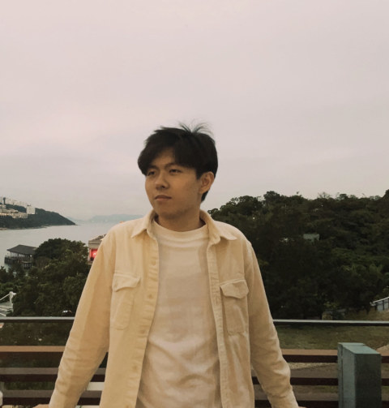

PhD student · Computer Science · UC Santa Barbara
Hanning Zhang
I work on selective tool usage, efficient agent systems and agentic RL. Before that, I worked on LLM reasoning and alignment.
I'm a first-year PhD student at UC Santa Barbara, advised by Prof. Zhen Dong. I received my M.S. from UIUC working with Prof. Tong Zhang, and my B.S. from HKUST.
News
- Sep 2026 Started my PhD in Computer Science at UC Santa Barbara. 🎓
- 2026 Honored as a Siebel Scholar, Class of 2026. 🏅
- 2026 PhysProver accepted to Findings of EMNLP 2026.
- 2026 OpenGenAlign accepted to Findings of ACL 2026.
- Summer 2026 Applied Scientist Intern at Amazon, Palo Alto — multi-task & multi-domain learning for Ads.
- Jun 2026 Joined the ZenAI Lab at UCSB; working on an on-device orchestrator with NVIDIA collaborators.
- 2025 Gradient Variance Minimization (GVM) accepted to NeurIPS 2025; Entropy-Regularized PRM accepted to TMLR.
- 2025 ScaleBiO accepted to ACL 2025; Overadaptation in SFT accepted to ICML 2025.
- Summer 2025 Applied Scientist Intern at Amazon, Palo Alto — reward models for ML engineering.
Publications
* denotes equal contribution. Sorted roughly by recency.
Experience
Applied Scientist Intern, Amazon
Palo Alto, CA · Supervisor: Dr. Lin Zhong
Multi-task and multi-domain learning for Ads.
Research Assistant, ZenAI Lab — UC Santa Barbara
Supervisor: Prof. Zhen Dong
Built Hybrid Intelligence, an on-device orchestrator that delegates to cloud experts, with NVIDIA collaborators.
Applied Scientist Intern, Amazon
Palo Alto, CA · Supervisor: Dr. Liang Qiu
Reward models for machine learning engineering.
Research Assistant, ScaleML Lab — UIUC
Supervisor: Prof. Tong Zhang
LLM alignment, generalization and reasoning: process reward modeling, ensemble methods against catastrophic forgetting, and data/training-efficient reasoning. Published at TMLR, ACL, EMNLP, ICML and NeurIPS; open-sourced several training pipelines and datasets.
Research Intern, Blender Lab — HKUST & UIUC
Supervisors: Prof. Heng Ji, Prof. Tong Zhang
Proposed Refusal-Aware Fine-tuning (R-Tuning) to teach LLMs to say “I don’t know”, improving factuality and calibration.
Education
University of California, Santa Barbara
PhD in Computer Science
University of Illinois Urbana-Champaign
MS in Computer Science (thesis track)
The Hong Kong University of Science and Technology
BS in Computer Science, First Class Honors
Selected Awards
- 🏅 Siebel Scholar, Class of 2026 ($35,000)
- 🏆 Outstanding Paper Award, NAACL 2024 (6 / 2434 ≈ 0.25%)